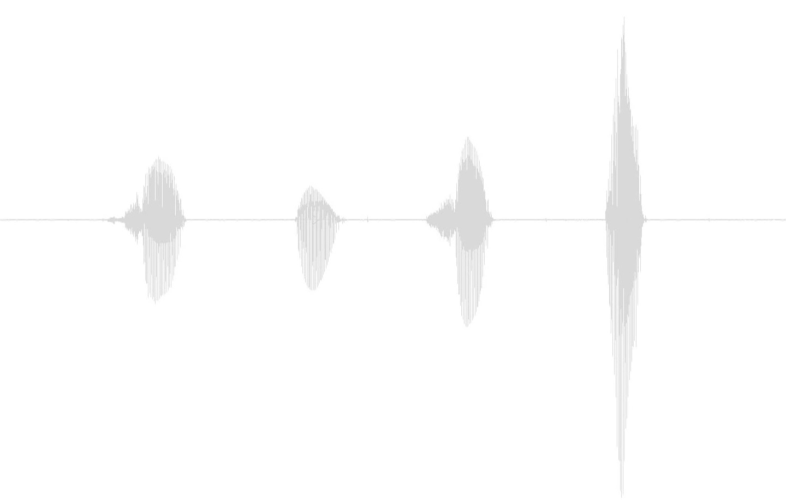
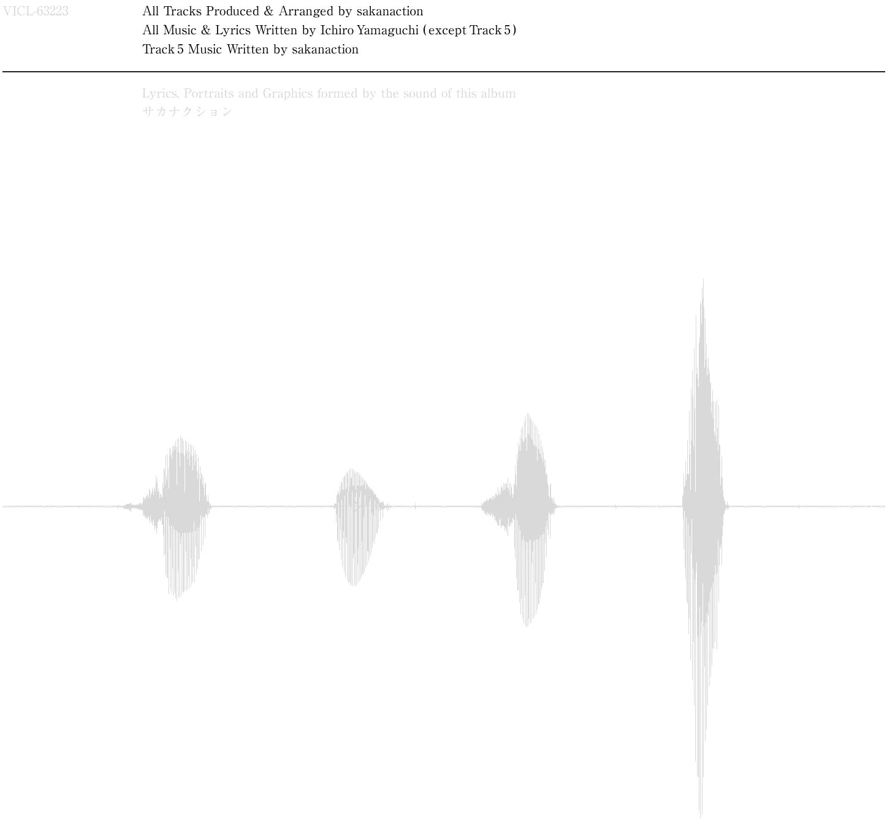

新しい白
サカナクションというスケッチブックがあって
そこに1st、2ndで色んなものを置いて来たけど
今回のアルバムを作る際に、一回それを
全部取っ払って
元々あった場所にそれを置いても良いけど
とりあえずもう一回全部置き直す
新しい白、新色の白を作るつもりで。
3rd Album
活動拠点を東京に移し、初めて制作されたアルバム。
オリコンウィークリーチャートで初登場8位を獲得。
「ネイティブダンサー」のMUSIC VIDEOがネット上で大きな話題となるなど、高度な作品性以外にもバンドが発信する表現の独自性も高く評価され、
2010年代のロックシーンを牽引するバンドとして注目を集める。
全11曲収録。
VIDEO
RELEASE

通常版
VICL-63224 \2,724(税込み)
-
全作詞：山口一郎
1.Ame（B）
作曲：山口一郎 -
2.ライトダンス
作曲：山口一郎 -
3.セントレイ
作曲：山口一郎 -
4.ネイティブダンサー
作曲：山口一郎 -
5.minnanouta
作曲：サカナクション -
6.雑踏
作曲：山口一郎 -
7. 黄色い車
作曲：山口一郎 -
8.enough
作曲：山口一郎 -
9.涙ディライト
作曲：山口一郎 -
10.アドベンチャー
作曲：山口一郎 -
11.Human
作曲：山口一郎
STORE
L I N K